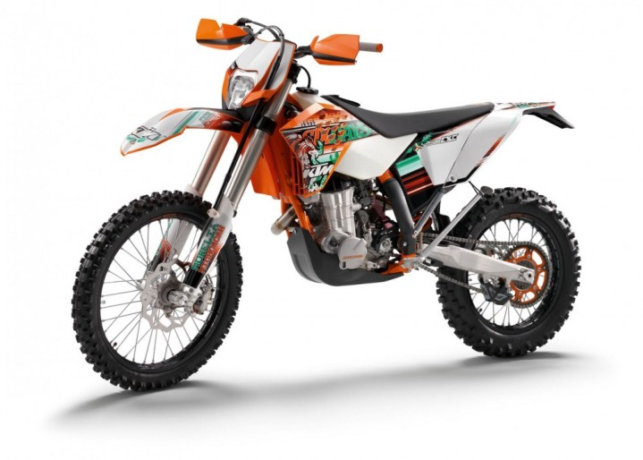

Ktm exc 450 Six Days
WERSJA SIX DAYS - International Six Days Enduro (ISDE) (Drużynowe Mistrzostwa Świata Zespołów Narodowych[1], do 1980 International Six Days Trials (ISDT)) potocznie zwane Sześciodniówką - doroczne drużynowe zawody motocyklowe enduro rozgrywane pod auspicjami Fédération Internationale de Motocyclisme (FIM), będące, zgodnie z regulaminem FIM, dorocznym testem niezawodności motocykli i umiejętności kierowców składające się z sześciu jednodniowych etapów rozgrywanych w kolejnych dniach.
KTM EXC 450 to motocykl klasy enduro produkowany przez austriacki koncern od 1999 roku do dziś. Ponad 20 lat w sprzedaży bardzo dobrze świadczy o każdym modelu, a w przypadku EXC 450 jest dodatkowo poparte ogromną popularnością wśród miłośników off-roadu, wręcz kultem osób, które wiedzą jak jeździć w terenie. Co wpłynęło na tak duży sukces? Jakość wykonania, fenomenalna sprawność w terenie, mocny silnik, niska masa… Zalet EXC 450 nie sposób wymienić w jednym zdaniu! KTM EXC 450 został wyposażony w jednocylindrową jednostkę napędową o pojemności 449 ccm. Chłodzony cieczą silnik czterosuwowy otrzymał rozrząd SOHC (cztery zawory na cylinder sterowane przez jeden wałek rozrządu), gaźnikowy układ zasilania renomowanej marki Keihin, cyfrowy zapłon Kokusan i dwa rozruszniki (nożny i elektryczny). Jednostka cechuje się mocą maksymalną 51 KM i maksymalny moment obrotowy 45 Nm, co zapewnia bardzo dynamiczne przyspieszenia i umożliwia osiągnąć prędkość maksymalną 160 km/h. Moc i moment obrotowy trafiają na tylne koło za pośrednictwem manualnej skrzyni biegów o sześciu przełożeniach, łańcucha napędowego typu O-ring i mokrego sprzęgła wielotarczowego. Niska masa pojazdu (na sucho tylko 113 kilogramów) uwydatnia osiągi jednostki i pozytywnie wpływ na zużycie paliwa. Średnie spalanie na poziomie 4,5 l/100 kilometrów sprawia, że na zbiorniku paliwa o pojemności 9 litrów użytkownicy mają do dyspozycji 200 kilometrów zasięgu na jednym tankowaniu. Szkieletem KTM EXC 450 jest kołyskowa rama rurowa ze stali chromowo-molibdenowej i dwustronny wahacz wleczony z lekkich stopów aluminium. Za amortyzację kół odpowiada widelec teleskopowy typu Upside-down marki WP (skok 300 mm) oraz centralna kolumna z pojedynczym amortyzatorem (również od WP) o skoku 335 mm. Nad bezpieczeństwem użytkowników czuwają dwie wentylowane tarcze hamulcowe o średnicy 260 i 220 mm (przód/tył) oraz dwu- i jednotłoczkowe pływające zaciski hamulcowe (przód/tył). Taki zestaw w bardzo lekkim motocyklu sprawia, że KTM EXC 450 staje w miejscu na każde zawołanie kierowcy.
Kliknij aby wrócić do strony głównej !
